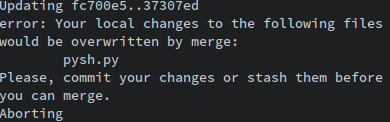

Analysis Section
To better understand the current problems facing those downloading multiple repositories from a user's Github account, I will observe a frequent user of Git and Github clone multiple repositories from a remote user. Our remote user, simon-weber has at the time of writing exactly 40 repositories. Our test user has been instructed to download the 'muspy', 'gomegle', 'crunchbang-conf' and 'omegle-to-irc' repositories.
Below is a screenshot showing the test user's attempts to clone these repositories. Note the spelling mistake made in cloning 'crunchbang-conf', leading to an error that the test user must use a keyboard interrupt to escape from, and the amount of characters necessary to type out these commands.

This observation highlighted some key flaws in the way that multiple Github repositories must be cloned:
Every repository requires its own command to clone. Our test user circumvented this by using the Bash syntax to instruct the shell to run multiple commands sequentially, but this means extremely long lines of code.
Every repository's URL must be found and copied into the terminal, whether by hand or by using system functions (e.g. middle-click on Unix systems). While the copying may not be overly time-consuming for a small number of repositories, for a larger number it will get increasingly frustrating for the user (in fact, the user did report a sense of annoyance at having to perform such a menial action just 4 times).
The output is completely opaque to any non-expert user. The version control system Git is renowned for being difficult to use: see here and here (warning: strong language) for examples of user frustration and confusion.
My project, then, should aim to provide a clear, simple method of cloning single or multiple repositories from a single Github user's account.
In order to gain a more clear idea of the required solution, I decided to undertake an interview with Daniel: the client for this project, and another regular user of Github. I wanted to focus on the interface that would be easiest to use, while also being the most accessible for the most people.
The transcript of the interview is given below, with no modifications save the elimination of pauses.
Me: So, what's the most important thing you want to see in this project? Do you want something that looks pretty; something that 'just works'?
Dan: I think the most important thing is flexibility. It's alright if it works for me; I can deal with the command line syntax or whatever. But it'd be great if there was some kind of menu as well, rather than having to type everything out.
Me: I understand, so should there be more than one possible interface?
Dan: Yeah, I guess that could work. I mean, sometimes you're just going to want to run a single command and have it run in the background, and sometimes you're gonna want to inspect each one, maybe look at its description, before you decide whether you want to clone it or not.
Me: I'm thinking about using the Curses framework to design menus for this project, you know, with buttons labelled clone, skip and so on. Can you see any problems with that?
Dan: Well, I don't know, I haven't had great results with Curses on Windows, so that might be worth considering.
Me: Yeah, I think there's a few problems with terminal control, the command prompt is pretty outdated - so should there just be a text-based version as well, that doesn't need terminal control like that?
Dan: That could work, yeah. Just on the subject of being easy to use, would this project show the original Git errors if any get thrown? Sometimes I'd like to see those, or at least see what type of error it was.
Me: Yeah, that could be integrated for sure - the original errors should get logged in a standard form, and there'll be a slightly nicer error message on screen for the non-experts. So, we've got two interfaces, and both of them need some way of checking which repositories the user actually wants -- unless they just want to download everything?
Dan: Can we do that? I mean, I don't just want to go through every repository clicking "Yes, yes, yes"-
Me: Sure, I'll add an option just to download everything. Anything else you'd like to see? You'll be running this on Unix-like systems, right?
Dan: Yeah, Mac OSX and maybe Mint, so it should probably work on both of those. I'll be using this a lot though, so there'd better not be any bugs!
Me: I'll do my best - thanks a lot for your time.
The interview confirmed what I thought: the major barrier between developers and their goal of cloning multiple Github repositories is usability.
Background to the Problem
Many developers find the need in their daily lives to clone multiple repositories belonging to a single user. This is often as a result of projects being split into different repositories for easier version-control and separation of concerns (e.g. the front-end and back-end systems of a project).
However, the current available methods are both unwieldy and unfriendly to users, requiring either lots of time-consuming copy-pasting into a terminal with the same repeated command, or an in-depth knowledge of technology such as Bash variable expansion.
My system will be much faster and, more accessible and above all more user-friendly. Instead of accumulating a two-hundred-character command in Bash with full Git URLs, my project will provide both a menu-based and a vastly simplified command-line-based interface to download some or all of a user's Github repositories.
Current System
The current system for downloading multiple repositories from a user's Github account is, largely, non-existent. The most common system is, essentially, just to 'git clone $URL' for each repository that the user wants to download. For small numbers of repositories, perhaps 2 or 3, this may be sufficient; however, this is an extremely time-consuming way of achieving what is essentially a very simple task. The test user, Alexa, commented that it took 'ages' to find and download just 4, and when asked about the output she informed me that she did not understand most of what it meant.
Below is a screenshot of a rather cryptic error caused by differences between the remote repository and the local version, when a simple git pull is run inside a repository.

Identification of Prospective Users
Users of this program will, like Daniel, be somewhat experienced with the basics of Git and Github. However, they may not have read enough of Git's documentation to fully understand the error messages they may recieve (see above for an example). This, potentially, means that there is a very large client base for this system, who want to interact with their repositories and the repositories of others in a more friendly and interactive way. More advanced users could use the command-line interface to achieve all that they want in a single readable line of code, whereas newer users could use the menu interface to iterate through each repository and view their descriptions before deciding whether to clone them or not. This interface will use the arrow keys and return key to select choices, making it essentially universal to users of any major operating system. The skills to use this system at its most basic level will be absolutely negligible, and far below the expected skill level of anyone who requires the use of a Github repository.